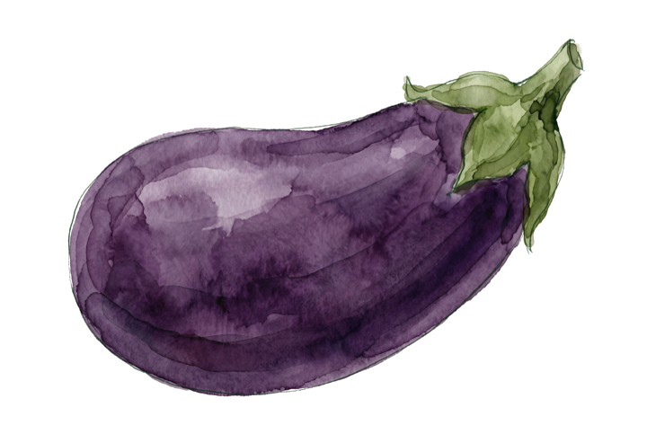
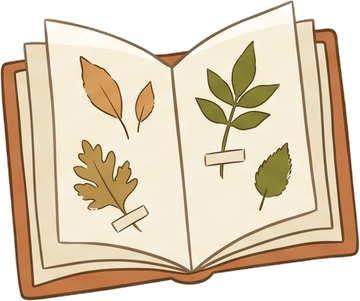
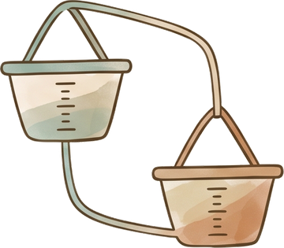
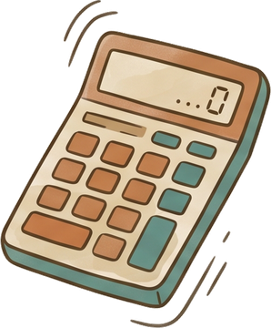

כלים פתוחים לחקלאות מקומית
ספר גידולים קהילתי, מחירון שוק בזמן-אמת, ומחשבון שדה — בנויים על ניסיון שדה ומחקר AI, פתוחים לכולם.
72 גידולים בספר38 מוצרים במחירון




הכלים שלנו
זמינים עכשיו
פתוחספר הגידולים
מועדי זריעה ושתילה, ריווח, טיפול לאורך העונה ויבול צפוי — לכל גידול.
72 גידוליםכניסה ←

פתוחמחירון השוק
מדד מחירים קהילתי לירקות אורגניים — מגמות, טווחים וטריות בזמן-אמת.
38 מוצריםכניסה ←

פתוחמחשבון השדה
כמות זרעים ושתילים, יבול והכנסה — לפי המרווח, הערוגה והמשק שלכם.
6 מחשבוניםכניסה ←
למי זה מתאים?
גנן · מתענייןGARDENER
ספר גידולים עם מועדי זריעה, ריווח וטיפול — לגינה הביתית, בשפה פשוטה.
לספר הגידולים ←חקלאי מקומיFARMER
מחירון שוק ומחשבון שדה — נתונים, טווחים ומקורות לקבלת החלטות.
למחירון ←מתכנן · יועץPLANNER
כלים מתקדמים לתכנון עונה, מעקב יבול ואינטגרציות שדה.
על הכלים ←ידע פתוח לחקלאות מקומית
SFA נבנה על ניסיון שדה קהילתי ומחקר AI. כל נתון — מחיר, מינון, מועד — פתוח לעיון, להרחבה ולתרומה.
72גידולים בספר
38מוצרים במחירון
עזרו להשלים את המידע
הספר והמחירון גדלים מתרומות הקהילה. מצאתם נתון חסר או מחיר עדכני? ספרו לנו.
◐ השלמת מידע ←הצעה או בקשה?
אין צ׳אט — טופס קצר.
בפיתוח
בקרוביומן השדהתיעוד זריעה, השקיה ויבול
ניהול מלאיזרעים, שתילים ותשומות
מכירות ולקוחותהזמנות, CSA ונקודת מכירה